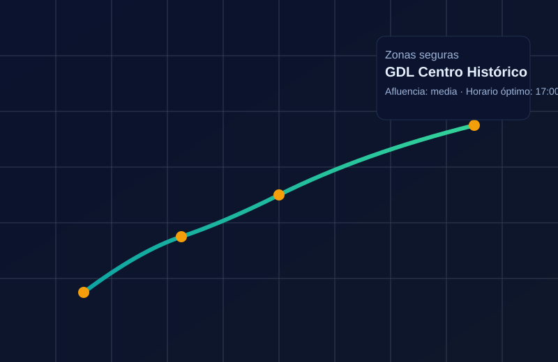

Inseguridad percibida
La percepción de riesgo aumenta cuando el visitante no sabe qué zonas son seguras.
Guía inteligente para visitantes del Mundial 2026 en Guadalajara.
Mapas de seguridad, rutas inteligentes, restaurantes verificados y alertas en tiempo real para que vivas Guadalajara con tranquilidad, confianza y una experiencia cultural auténtica.

SafeRoute GDL es una aplicación móvil diseñada para brindar seguridad, orientación y confianza a los turistas que visiten Guadalajara durante el Mundial 2026. Con datos, geointeligencia, reseñas verificadas y herramientas de IA, la app recomienda zonas seguras, restaurantes confiables, rutas con menor congestión y sugerencias de vestimenta y ambiente social.
La percepción de riesgo aumenta cuando el visitante no sabe qué zonas son seguras.
Los mapas genéricos no consideran saturación, horarios seguros o afluencia.
Una mala experiencia gastronómica puede arruinar la visita.
Falta de información sobre vestimenta, ambiente social y expectativas del lugar.
Eventos y días de partido pueden generar retrasos y riesgos.
Una app que integra mapas de seguridad, rutas inteligentes, recomendaciones gastronómicas verificadas y análisis en tiempo real, además de espacios para aficionados como puntos de encuentro y dinámicas relacionadas al Mundial.
App gratuita con funciones premium: rutas VIP, alertas avanzadas, recomendaciones basadas en IA y concierge digital.
Establecimientos destacados, comisiones por reservas y publicidad segmentada.
Certificación mensual con auditoría de higiene/ambiente y distintivo digital.
Anuncios dirigidos según ubicación, horario e intereses.
Códigos premium para huéspedes, rutas al estadio y mapas para recepción.
Aquí puedes ver y descargar el archivo ejecutable para celulares del prototipo visual de la aplicación, mostrando cómo se presentan las rutas seguras, las recomendaciones de restaurantes y las alertas en tiempo real.
Ver prototipo¿Te interesa colaborar, invertir o probar la app? Déjanos tus datos y te contactaremos.
Próximamente: Trabajando en mejoras, con funcionalidades clave para el Mundial 2026.
Sentimos las molestias.